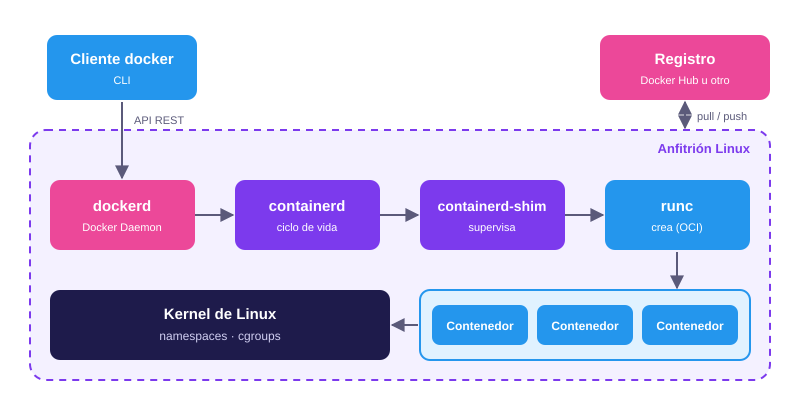

Módulo 02
Arquitectura
Qué componentes intervienen cuando ejecutas un contenedor y cómo el kernel de Linux lo mantiene aislado.
Visión general
Docker sigue una arquitectura cliente-servidor. El comando docker que escribes en la
terminal es solo un cliente: no crea contenedores por sí mismo, sino que envía
peticiones a un servicio en segundo plano, el daemon (dockerd), a
través de una API REST. Por defecto la comunicación se hace mediante un socket Unix local,
aunque también puede hacerse por red.
El daemon, a su vez, no ejecuta los contenedores directamente. Delega esa tarea en una cadena de componentes más especializados, hasta llegar al kernel de Linux, que es quien realmente aísla los procesos.

Componentes
Cada pieza tiene una responsabilidad concreta. Esta separación permite reemplazar o reutilizar componentes sin cambiar el resto, y es la base de los estándares de la OCI.
| Componente | Función |
|---|---|
Cliente (docker) |
Interfaz de línea de comandos. Traduce cada comando en una petición a la API del daemon. |
dockerd |
Daemon de Docker. Gestiona imágenes, contenedores, redes y volúmenes, y expone la API. |
containerd |
Runtime de alto nivel. Administra el ciclo de vida de los contenedores (crear, iniciar, detener) y el almacenamiento de imágenes. |
containerd-shim |
Proceso intermedio que permanece junto a cada contenedor. Mantiene abiertas sus
entradas y salidas y permite reiniciar containerd sin afectar a los
contenedores. |
runc |
Runtime de bajo nivel. Implementación de referencia de la especificación de la OCI: configura namespaces, cgroups y sistema de archivos, y lanza el proceso del contenedor. |
| Registro | Servicio que almacena y distribuye imágenes. Docker Hub es el público por defecto, pero puede usarse uno privado. |
containerd y
runc, y ambos pasaron a ser proyectos independientes que usan también otras
herramientas, como Kubernetes.
Qué ocurre con docker run
Un solo comando activa toda la cadena anterior. Tomemos este ejemplo, que arranca un servidor web Nginx:
docker run -d -p 8080:80 nginx- El cliente envía la petición a
dockerdmediante la API. dockerdbusca la imagennginxen el equipo. Si no la encuentra, la descarga del registro (Docker Hub).dockerdprepara la configuración del contenedor (red, puertos, volúmenes) y se la pasa a containerd.containerdlanza un shim y le pide a runc que cree el contenedor.runccrea los namespaces y cgroups, monta el sistema de archivos de la imagen e inicia el proceso. Después termina su ejecución.- El shim queda supervisando el proceso mientras el contenedor siga activo.
Namespaces: qué puede ver un contenedor
Un namespace es una función del kernel de Linux que da a un proceso su propia vista de un recurso del sistema. Dentro del contenedor, el proceso cree estar solo en la máquina. Docker crea un conjunto de namespaces para cada contenedor:
| Namespace | Qué aísla |
|---|---|
pid |
Los identificadores de proceso. El primer proceso del contenedor es el PID 1 y no ve los procesos del anfitrión. |
net |
Las interfaces de red, direcciones IP, tablas de rutas y puertos. |
mnt |
Los puntos de montaje: cada contenedor ve su propio sistema de archivos. |
uts |
El nombre de host del sistema. |
ipc |
La comunicación entre procesos (memoria compartida y colas de mensajes). |
user |
Los identificadores de usuario y grupo. Permite que root dentro del contenedor corresponda a un usuario sin privilegios en el anfitrión. No se activa por defecto. |
cgroup |
La vista de la jerarquía de cgroups del proceso. |
Compruébalo tú mismo
Si ejecutas un contenedor que solo lista sus procesos, verás que únicamente existe el suyo, con PID 1:
docker run --rm alpine psResultado:
PID USER TIME COMMAND
1 root 0:00 psY si pides el nombre de host, obtendrás el identificador del contenedor, no el de tu equipo:
docker run --rm alpine hostnameCgroups: cuántos recursos puede usar
Los namespaces controlan lo que un contenedor ve; los control groups (cgroups) controlan lo que puede consumir. Sin ellos, un contenedor podría acaparar toda la memoria o la CPU del anfitrión y afectar a los demás. Las distribuciones actuales de Linux usan la versión 2 de cgroups.
Con Docker, los límites se fijan al crear el contenedor:
docker run -d --name web \
--memory=256m \
--cpus=0.5 \
--pids-limit=100 \
nginx| Opción | Efecto |
|---|---|
--memory=256m |
Limita la memoria RAM a 256 MB. |
--cpus=0.5 |
Permite usar como máximo la mitad de un núcleo de CPU. |
--pids-limit=100 |
Limita el número de procesos, lo que ayuda a contener ataques de tipo fork bomb. |
Para ver el consumo real de los contenedores en ejecución puedes usar:
docker statsMás capas de seguridad
Los namespaces y los cgroups son la base, pero no la única defensa. Docker añade por defecto otras restricciones:
- Capabilities: el contenedor arranca con un conjunto reducido de los privilegios de root, no con todos.
- Seccomp: un perfil por defecto bloquea llamadas al sistema consideradas peligrosas.
- AppArmor o SELinux: políticas de control de acceso, según la distribución.